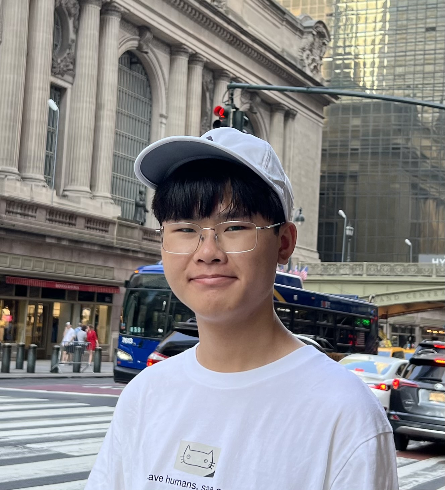

01
Understand first
I start by asking what problem needs to be solved, who experiences it, and what a successful product should look like.
COMPUTER SCIENCE · UC SAN DIEGO
A QUICK INTRODUCTION
03 / 05Hello. I’m Alan, a computer science student at UCSD who enjoys turning ideas into something tangible that others can use, experience, and connect with. From modernizing NKOK’s website to building software and machine-learning projects, I'm seeking experiences that challenge me to learn, contribute, and grow as a software engineer. Others have taken the chance, will you?

01 / THE WHY
My journey into software started with curiosity in a terminal and a simple riddle game. Seeing someone else interact with something I had made changed how I thought about programming: code could be more than just the method — it could be a useful experience for another person.
That idea still guides the way I approach every project: understand the need, make deliberate choices, and build something dependable.
Read my story →BEYOND THE TERMINAL
I enjoy the process as much as the outcome: asking questions, understanding why it matters, learning from others, and finding a clearer way forward when the first attempt falls short. I want the things I build to be useful to someone beyond myself.
Get to know me →02 / HOW I WORK
A good solution starts before the first line of code — and gets better after it runs.
I start by asking what problem needs to be solved, who experiences it, and what a successful product should look like.
I break complex problems into manageable pieces and choose an approach that balances clarity, maintainability, and performance.
I implement in focused steps, test assumptions, learn from what doesn’t work, and refine the experience as I go.
I care about the result beyond “it works”: it should be understandable, dependable, and genuinely useful to the people using it.
03 / SELECTED WORK
FEATURED PROJECT
Improving the path from discovery to purchase through a streamlined user experience, customer-site redirects, analytics, cookie management, and SEO improvements.
NEXT CHAPTER
I'm a UC San Diego undergraduate finishing my BS in Computer Science by June of 2028. If you need someone who doesn't just build what's already here, but inquires at the future and understands the "why", look no further. Contact me.